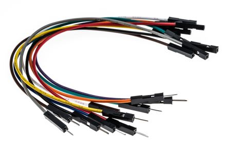
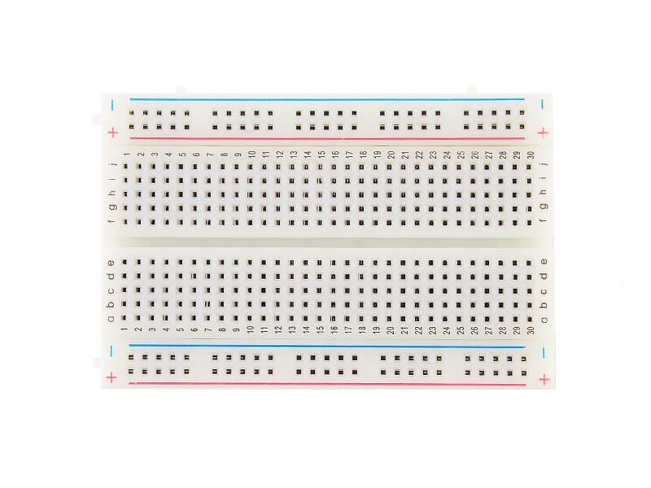
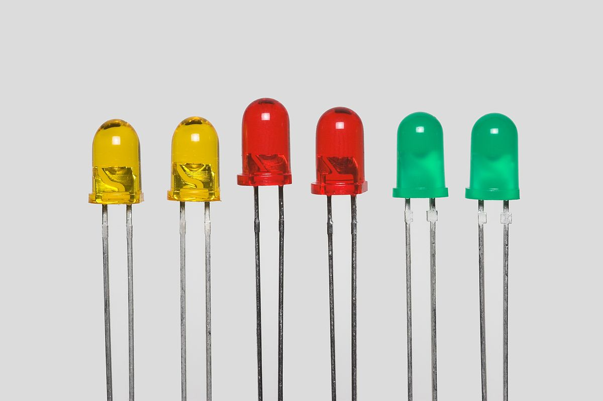
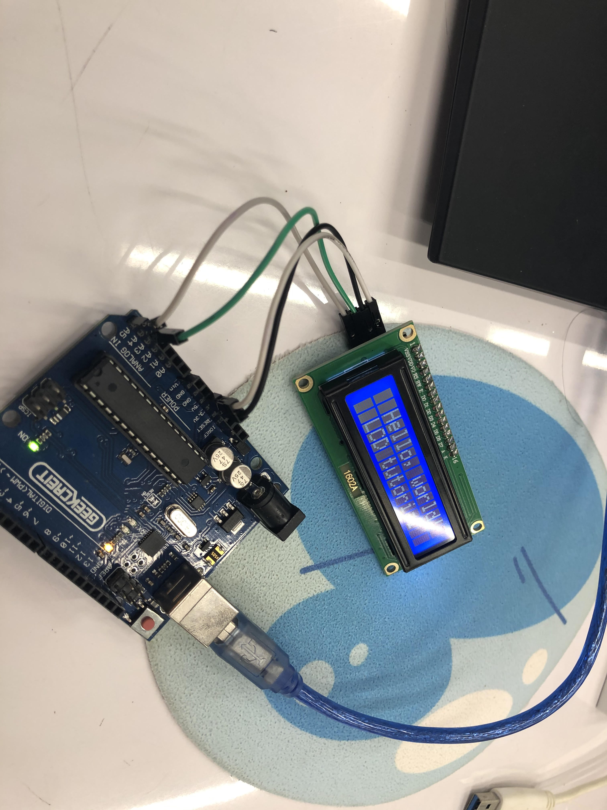

Embedded Programming
Introduction
In this topic , we worked with many eletrical components and C# programming language.
Despite having prior experience with the microbit and C# programming, this topic is undoubtedly the most challenging for me.
Arduino Uno
The Arduino Uno ,which I like to think of as an updated Microbit , is what we will be using throughtout the whole topic.

Common Components
Jumper wires
Jumper wires are used to connect components with one and another
Breadboards
Breadboards are used to hold all components together and it also makes it a lot easier and organized to make a circuit.
Push Buttons
Push Button is one of the common input devices used
Led and RGB Led

Led is one of the common output devices used and an RGB led is basically just a green , red and blue led combined to give out different colours.
Simple led fade
What I did here in the coding is that I am constantly checking the brightness of the led.
The brightness of the led will keep increasing and increasing until it reach 255 and then the led will start to decrease in brightness until it hits 0.
I then put a delay in the coding to give the led a nice fading effect.
Servo

This is a simple servo code.Basically, arudino is constantly checking if the servo is at a 0 degree angle or at a 180 degree angle.If the servo is at 0 degrees , arudino will tell the servo to move to a 180 degree position and vice versa.
Hello world LCD display

To make it simple , the arudino have to first know what is the dimension of the LCD
In void setup ,lcd.print creates the text and lcd.setCursor tells the LCD where to place the text